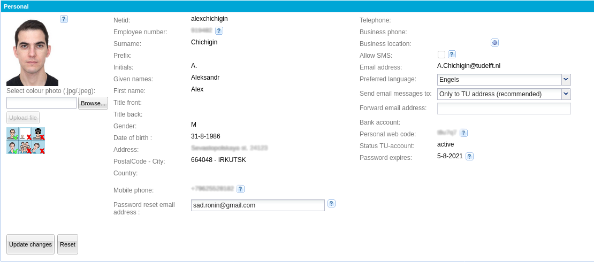
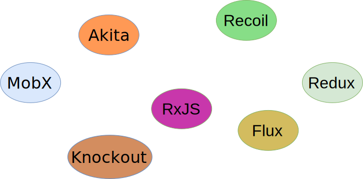
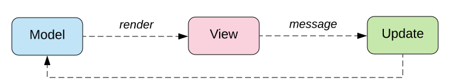
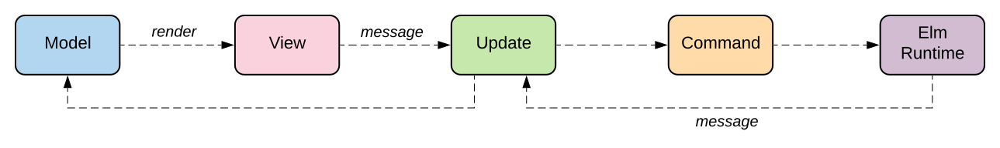

Client-side state management
Alex Chichigin
12 Mar 2021
About me
- PhD Student/Software Developer @ TU Delft
- MixDress hobby-developer
- ~10 years Web dev
- Haskell + Servant + Yesod
- Java + Spring MVC (Boot) / JavaEE 6
- Python + Django / Web2py
- Clojure + Noir + stuff
- Ruby on Rails many years ago
- I hate Web dev!
About lecture
- Somewhat advanced
- Supplemental
- Superficial
Basic example
class Timer extends React.Component {
constructor(props) {
super(props);
this.state = { seconds: 0 };
}
tick() {
this.setState(state => ({ seconds: state.seconds + 1 }));
}
componentDidMount() {
this.interval = setInterval(() => this.tick(), 1000);
}
componentWillUnmount() {
clearInterval(this.interval);
}
render() {
return (
<div>Seconds: {this.state.seconds}</div>
);
}
}
The challenge

Problems
- Reassembling whole structure from parts
- Validating relations
- Single responsibility violation
- Data management/audit
Solution
We need a Database!
Frameworks

Example app
"Domain Model"
export class Issue {
constructor(title = 'New issue', description = 'Issue description', assignee) {
this.title = title;
this.description = description;
this.assignee = assignee;
this.active = true;
}
}
export class Issues {
constructor(issues = []) {
this.issues = issues;
}
add(issue) {
this.issues.push(issue);
}
}
MobX
Objects with reactive properties
MobX concept

Reactive timer
import React from "react"
import ReactDOM from "react-dom"
import { makeAutoObservable } from "mobx"
import { observer } from "mobx-react"
class Timer {
secondsPassed = 0
constructor() {
makeAutoObservable(this)
}
increase() {
this.secondsPassed += 1
}
reset() {
this.secondsPassed = 0
}
}
Reactive timer UI
const myTimer = new Timer()
// Build a "user interface" that uses the observable state.
const TimerView = observer(({ timer }) => (
<button onClick={() => timer.reset()}>Seconds passed: {timer.secondsPassed}</button>
))
ReactDOM.render(<TimerView timer={myTimer} />, document.body)
// Update the 'Seconds passed: X' text every second.
setInterval(() => {
myTimer.increase()
}, 1000)
The Elm Architecture



Redux
Redux is a pattern and library for managing and updating application state, using events called "actions"